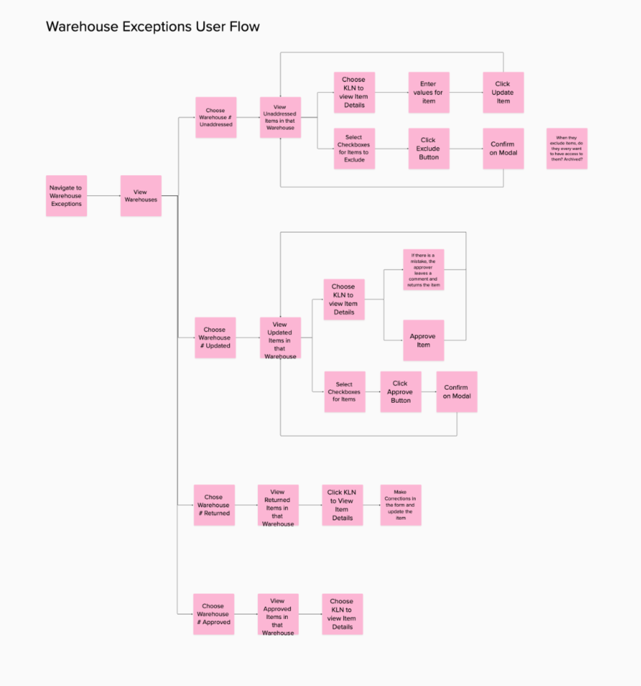
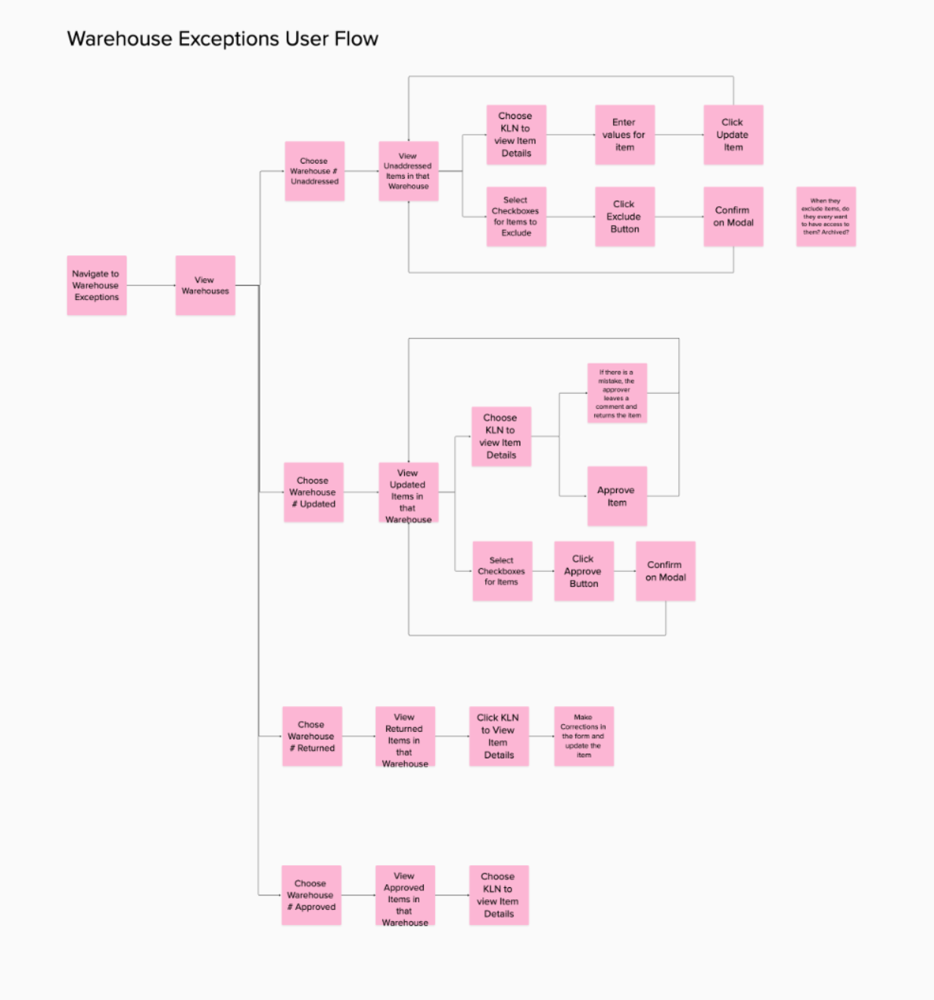

LIFO Application
Translating a complex accounting practice into a user-friendly application
How might we help our users more easily and efficiently accomplish their quarterly accounting tasks in one application?
Project Details
CONTRIBUTION
- Discovery
- Process Mapping
- UX Design
- UI Design
- User Testing
TOOLS USED
- Mural
- Figma
Challenge
The LIFO application is an internal web application that allows users to complete quarterly tasks related to LIFO tax accounting based on four different processes. There was a two part need for this application; the legacy system that the manual processes were based on was being retired and was not scalable. Our users needed a seamless, more efficient way to complete these tasks that could be scaled in the future. Our business users required reports to view and edit existing data and ways to upload files that would write to a database used to calculate LIFO tax information. They also needed a way to generate a sample of stores and pharmacies to conduct LIFO inventories. The current state processes the users had were extremely manual requiring a lot of emailing files back and forth, navigating multiple systems and working with a contract team to manually update the database using those files. We sought a solution that would streamline the processes and reduce the amount of manual work. While all four processes impacted the LIFO calculations, they each had unique needs that had to be considered to create a useful application for our end users.
Research
I collaborated with my PM and engineering to conduct discovery and research. These processes are unique to a large enterprise, therefore we relied on collaborating with our subject matter experts and business users regularly. I led multiples sessions of interviews with the subject matter experts for each of the four processes and then distilled our research into experience briefs and process maps. These artifacts guided the designs I made regarding user flows and UI design, along with regular brainstorming sessions with my product and technology counterparts.
User Flows
Each of the four processes had its own user flow. Creating these artifacts helped our team visualize the steps the user needed to take for each process.
 

Site Map and Information Architecture
I find creating site maps and information architecture for the application is helpful for me to visualize how the different parts and pages of the web app go together. It also helps the team to align on which pages or screens we may be discussing during collaboration sessions.
Low Fidelity Wireframes
Based on the research I was then ready to create low-fidelity wireframes. Since we held weekly touch base meetings with our business users I was able to get feedback often and iterate based on that feedback. Working in low-fidelity helped me work more efficiently.
As this product is an internal accounting tool, I have not included images of the high-fidelity prototypes or the production application.
Impact
The impact for our business users is that they can now work more easily and efficiently on their tasks. For example, the Store Sampler use case has completely automated the creation of a sample that was previously created by a user looking at a list of thousands of stores and counting down every twenty stores and copy and pasting that store name to a sample list. This saves hours of manual work for this task alone. The Warehouse Exception Report allows users to stay in one application while editing items; the system will automatically make the changes to the database. It also includes a history of changes and comments that provides auditing accountability between users that they didn't previously have. It allows different users to research in the application why a change on an item was made. This product had some very challenging aspects because the processes for the four use cases are all very different and complex. It required a great deal of research and digging in to understand the very specific needs of enterprise accountants working on unique work flows. We have received positive feedback from our users that the application has reduced their workload and created labor savings. The LIFO process which needs to be very accurate and our application facilitates this for our business.